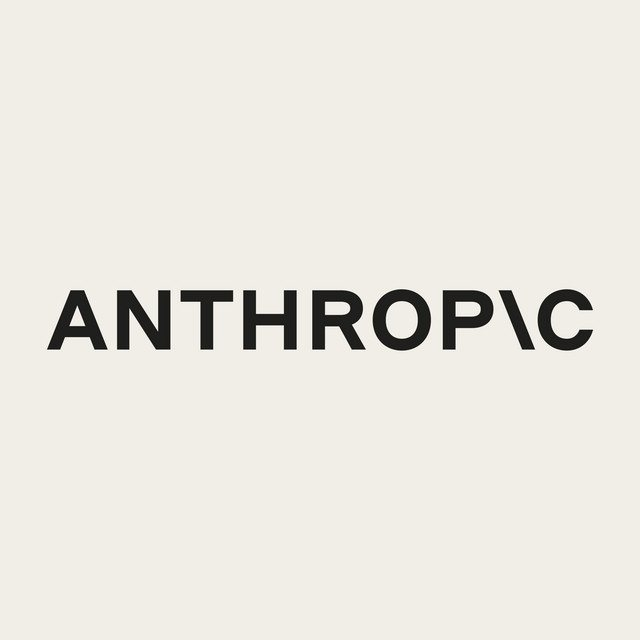

The Eclectic Polymath Podcast · Archive
#244 Anthropic: By the Numbers

About this episode
Everyone has an opinion about Anthropic's IPO. This episode ignores all of them. It is built from one document and one document only: the S-1 Anthropic filed with the SEC on October 26, 2026 — the registration statement for its Nasdaq debut under the ticker ANT, read cover to cover.
Key points
- Revenue of roughly $16 billion in the first half of 2026 against a net loss of about $80.7 billion in the same six months.
- Full-year net losses of $1.5 billion in 2023, $8.3 billion in 2024, and $42.0 billion in 2025 — driven less by operations than by stock compensation and the revaluation of its own funding instruments.
- A dual-class structure that hands permanent control to a Long-Term Benefit Trust through Class T shares.
- Customer concentration, compute commitments in the hundreds of billions, and a Risk Factors section that reads like an argument against the company's own valuation.
- The hosts work through the business the document describes — what Anthropic sells, who pays for it, what the losses are really made of, and what the governance structure means for anyone who buys the stock.
More like this
#243 Serbia's Student List: The Movement With No Leader That Beat the StrongmanOctober 28, 202645:35 #242 DreamWorks: The Studio Built to Beat DisneyOctober 28, 202655:24
#242 DreamWorks: The Studio Built to Beat DisneyOctober 28, 202655:24 #034: John Mbiti and the Debate Over African TimeMay 31, 202646:32
#034: John Mbiti and the Debate Over African TimeMay 31, 202646:32 #040: Peptides, GLP 1s, and the New Age of Body HackingJune 3, 20261:10:53
#040: Peptides, GLP 1s, and the New Age of Body HackingJune 3, 20261:10:53
#242 DreamWorks: The Studio Built to Beat DisneyOctober 28, 202655:24#034: John Mbiti and the Debate Over African TimeMay 31, 202646:32#040: Peptides, GLP 1s, and the New Age of Body HackingJune 3, 20261:10:53